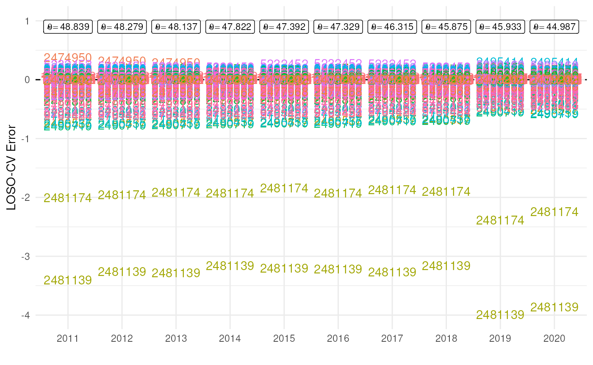

Group-Level Sensitivity Analysis
Source:vignettes/articles/group-level-sensitivity.Rmd
group-level-sensitivity.RmdIntroduction
When working with biodiversity data cubes, understanding how
sensitive your indicators are to individual groups (like species, sites,
or time periods) can be crucial for robust analysis. This tutorial
introduces the cross_validate_cube() function from
dubicube, which helps assess how individual categories
influence biodiversity indicators using cross-validation.
Group-level cross-validation for data cubes
Cross-validation is a resampling technique commonly used in statistics and machine learning to evaluate model performance. In the context of biodiversity data cubes, we adapt cross-validation to assess how robust indicators are to the inclusion or exclusion of specific groups. This helps identify influential categories that disproportionately affect indicator values.
A data cube and a statistic
Consider a data cube \(\mathbf{X}\)
from which we want to calculate a statistic \(\theta\). The data cube can be grouped,
e.g. by taxon, that contains multiple categories,
e.g. species1, species2, species3
…
-
Original Sample Data: \(\mathbf{X} = \{X_{11}, X_{12}, X_{13}, \ldots,
X_{sn}\}\)
- The initial set of data points, where there are \(s\) different categories in a group
(e.g. \(s = 10\) species in group
taxon) and \(n\) total samples across all categories (= the sample size). \(n\) corresponds to the number of cells in a data cube or the number of rows in tabular format.
- The initial set of data points, where there are \(s\) different categories in a group
(e.g. \(s = 10\) species in group
-
Statistic of Interest: \(\theta\)
- The parameter or statistic being estimated, such as the mean \(\bar{X}\), variance \(\sigma^2\), or a biodiversity indicator. Let \(\hat{\theta}\) denote the estimated value of \(\theta\) calculated from the complete dataset \(\mathbf{X}\).
Resampling and recalculating
From \(\mathbf{X}\), multiple data
cubes \(\mathbf{X}_{-s_j}\) are created
where in each new dataset a different category is removed compared to
the original data cube \(\mathbf{X}\).
For example in dataset 1, species1 is excluded; in dataset
2 species2; in dataset 3 species3; and so on.
For each new dataset, the statistic \(\theta\) is again calculated: \(\hat{\theta}_{-s_j}\).
-
Cross-Validation (CV) Sample: \(\mathbf{X}_{-s_j}\)
- The full dataset \(\mathbf{X}\) excluding all samples belonging to category \(j\). This subset is used to investigate the influence of category \(j\) on the estimated statistic \(\hat{\theta}\).
-
CV Estimate for Category \(\mathbf{j}\): \(\hat{\theta}_{-s_j}\)
- The value of the statistic of interest calculated from \(\mathbf{X}_{-s_j}\), which excludes category \(j\). For example, if \(\theta\) is the sample mean, \(\hat{\theta}_{-s_j} = \bar{X}_{-s_j}\).
Derivation of error measures
From this, we can calculate different error measures that help inform further analyses or decision-making steps.
-
Error Measures:
- The Error is the difference between the statistic estimated without category \(j\) (\(\hat{\theta}_{-s_j}\)) and the statistic calculated on the complete dataset (\(\hat{\theta}\)).
\[ \text{Error}_{s_j} = \hat{\theta}_{-s_j} - \hat{\theta} \]
- The Relative Error is the absolute error, normalized by the true estimate \(\hat{\theta}\) and a small error term \(\epsilon = 10^{-8}\) to avoid division by zero.
\[ \text{Rel. Error}_{s_j} = \frac{|\hat{\theta}_{-s_j} - \hat{\theta}|}{\hat{\theta} +\epsilon} \]
- The Percent Error is the relative error expressed as a percentage.
\[ \text{Perc. Error}_{s_j} = \text{Rel. Error}_{s_j} \times 100 \% \]
-
Summary Measures:
- The Mean Relative Error (MRE) is the average of the relative errors over all categories.
\[ \text{MRE} = \frac{1}{s} \sum_{j=1}^s \text{Rel. Error}_{s_j} \]
- The Mean Squared Error (MSE) is the average of the squared errors.
\[ \text{MSE} = \frac{1}{s} \sum_{j=1}^s (\text{Error}_{s_j})^2 \]
- The Root Mean Squared Error (RMSE) is the square root of the MSE.
\[ \text{RMSE} = \sqrt{\text{MSE}} \]
Getting started with dubicube
The dubicube cross-validation method can be applied on any dataframe from which a statistic is calculated and for which a grouping variable is present. For this tutorial, we focus on occurrence cubes. Therefore, we will use the b3gbi package for processing the raw data before moving on to the cross-validation.
# Load packages
library(ggplot2) # Data visualisation
library(dplyr) # Data wrangling
# Data loading and processing
library(frictionless) # Load example datasets
library(b3gbi) # Process occurrence cubes
library(dubicube) # Analysis of data quality & reliabilityLoading and processing the data
We load the bird cube data from the b3data data package using frictionless (see also here). It is an occurrence cube for birds in Belgium between 2000 en 2024 using the MGRS grid at 10 km scale.
# Read data package
b3data_package <- read_package(
"https://zenodo.org/records/15211029/files/datapackage.json"
)
# Load bird cube data
bird_cube_belgium <- read_resource(b3data_package, "bird_cube_belgium_mgrs10")
head(bird_cube_belgium)
#> # A tibble: 6 × 8
#> year mgrscode specieskey species family n mincoordinateuncerta…¹
#> <dbl> <chr> <dbl> <chr> <chr> <dbl> <dbl>
#> 1 2000 31UDS65 2473958 Perdix perdix Phasi… 1 3536
#> 2 2000 31UDS65 2474156 Coturnix coturn… Phasi… 1 3536
#> 3 2000 31UDS65 2474377 Fulica atra Ralli… 5 1000
#> 4 2000 31UDS65 2475443 Merops apiaster Merop… 6 1000
#> 5 2000 31UDS65 2480242 Vanellus vanell… Chara… 1 3536
#> 6 2000 31UDS65 2480637 Accipiter nisus Accip… 1 3536
#> # ℹ abbreviated name: ¹mincoordinateuncertaintyinmeters
#> # ℹ 1 more variable: familycount <dbl>We process the cube with b3gbi to put the data in a format, ready for analysis. We select the data from 2011 - 2020.
processed_cube <- process_cube(
bird_cube_belgium,
first_year = 2011,
last_year = 2020,
cols_occurrences = "n"
)
processed_cube
#>
#> Processed data cube for calculating biodiversity indicators
#>
#> Date Range: 2011 - 2020
#> Single-resolution cube with cell size 10km ^2
#> Number of cells: 379
#> Grid reference system: mgrs
#> Coordinate range:
#> xmin xmax ymin ymax
#> 280000 710000 5480000 5700000
#>
#> Total number of observations: 13225290
#> Number of species represented: 646
#> Number of families represented: 92
#>
#> Kingdoms represented: Data not present
#>
#> First 10 rows of data (use n = to show more):
#>
#> # A tibble: 280,184 × 13
#> year cellCode taxonKey scientificName family obs minCoordinateUncerta…¹
#> <dbl> <chr> <dbl> <chr> <chr> <dbl> <dbl>
#> 1 2011 31UDS65 2474051 Alectoris rufa Phasi… 1 100
#> 2 2011 31UDS65 2474377 Fulica atra Ralli… 6 1000
#> 3 2011 31UDS65 2474831 Rallus aquaticus Ralli… 1 1000
#> 4 2011 31UDS65 2478523 Picus viridis Picid… 5 3536
#> 5 2011 31UDS65 2480242 Vanellus vanellus Chara… 4 1000
#> 6 2011 31UDS65 2480332 Pluvialis aprica… Chara… 1 1000
#> 7 2011 31UDS65 2480482 Circus aeruginos… Accip… 2 3536
#> 8 2011 31UDS65 2480487 Circus cyaneus Accip… 9 3536
#> 9 2011 31UDS65 2480537 Buteo buteo Accip… 8 3536
#> 10 2011 31UDS65 2480637 Accipiter nisus Accip… 9 3536
#> # ℹ 280,174 more rows
#> # ℹ abbreviated name: ¹minCoordinateUncertaintyInMeters
#> # ℹ 6 more variables: familyCount <dbl>, xcoord <dbl>, ycoord <dbl>,
#> # utmzone <int>, hemisphere <chr>, resolution <chr>Analysis of the data
Suppose we are interested in the average number of observations per
grid cell per year. We create the function mean_obs() to
calculate this.
# Function to calculate the mean of observations per grid cell per year
mean_obs <- function(data) {
obs <- x <- NULL
data %>%
dplyr::mutate(x = mean(obs), .by = "cellCode") %>%
dplyr::summarise(diversity_val = mean(x), .by = "year") %>%
as.data.frame()
}We get the following results:
mean_obs(processed_cube$data)
#> year diversity_val
#> 1 2011 48.83864
#> 2 2012 48.27942
#> 3 2013 48.13675
#> 4 2014 47.82226
#> 5 2015 47.39197
#> 6 2016 47.32866
#> 7 2017 46.31520
#> 8 2018 45.87515
#> 9 2019 45.93329
#> 10 2020 44.98668These values do not tell us anything about reliability on their own. Therefore, we perform a leave-one-species-out cross-validation (LOSO-CV) to investigate the impact of individual species being excluded from the calculation.
Leave-one-species-out cross-validation
We use the cross_validate_cube() function to do this. It
relies on the following arguments:
data_cube:
The input data, either a processed data cube (fromb3gbi::process_cube()), or just the dataframe inside (i.e.processed_cube$data). For faster computation, passing just the dataframe is recommended.fun:
A user-defined function that computes the statistic(s) of interest fromdata_cube. This function should return a dataframe that includes a column nameddiversity_val, containing the statistic to evaluate.grouping_var:
The column(s) used for grouping the output offun(). For example, iffun()returns one value per year, usegrouping_var = "year".out_var:
The variable used to leave out one group at a time during cross-validation. The default is"taxonKey"(typically representing species), which results in leave-one-species-out cross-validation.progress:
Logical flag to show a progress bar. Set toTRUEto enable progress reporting; default isFALSE.
cv_results <- cross_validate_cube(
data_cube = processed_cube,
fun = mean_obs,
grouping_var = "year",
out_var = "taxonKey"
)
head(cv_results)
#> id_cv year taxonkey_out rep_cv est_original error sq_error
#> 1 1 2011 2474051 48.85551 48.83864 0.01686866 0.0002845518
#> 2 2 2011 2474377 48.49272 48.83864 -0.34592150 0.1196616847
#> 3 3 2011 2474831 48.91447 48.83864 0.07583503 0.0057509524
#> 4 4 2011 2478523 48.66861 48.83864 -0.17002678 0.0289091060
#> 5 5 2011 2480242 48.56884 48.83864 -0.26979464 0.0727891466
#> 6 6 2011 2480332 48.97265 48.83864 0.13401280 0.0179594315
#> abs_error rel_error perc_error mre mse rmse
#> 1 0.01686866 0.0003453959 0.03453959 0.001122516 0.03544285 0.1882627
#> 2 0.34592150 0.0070829473 0.70829473 0.001122516 0.03544285 0.1882627
#> 3 0.07583503 0.0015527672 0.15527672 0.001122516 0.03544285 0.1882627
#> 4 0.17002678 0.0034813989 0.34813989 0.001122516 0.03544285 0.1882627
#> 5 0.26979464 0.0055242048 0.55242048 0.001122516 0.03544285 0.1882627
#> 6 0.13401280 0.0027439914 0.27439914 0.001122516 0.03544285 0.1882627The RMSE is an average error measure we obtain for each year. It remains very similar over the years.
# Visualise mean errors
ggplot(cv_results, aes(x = as.factor(year))) +
# Reference line
geom_hline(yintercept = 0, colour = "black", linetype = "dashed") +
# Plot RMSE
geom_point(aes(y = rmse), colour = "red", size = 3) +
# Settings
labs(x = "", y = "RMSE") +
theme_minimal()
Indeed, looking at the individual error values reveals similar patterns for every year. The species with taxon key 2481174 has an error of -2 in year 2011. This means that without this species the average number of occurrences per grid cell would be 2 units lower than the estimate based on the full dataset (in this case around 46.8 instead of 48.8).
# Get original estimates (based on full data cube)
original_estimates <- mean_obs(processed_cube$data)
original_estimates$label <- paste(
"hat(theta) ==", round(original_estimates$diversity_val, 3)
)
# Visualise errors
ggplot(cv_results, aes(x = as.factor(year))) +
# Reference line
geom_hline(yintercept = 0, colour = "black", linetype = "dashed") +
# Plot species keys
geom_text(aes(y = error, colour = as.factor(taxonkey_out),
label = as.factor(taxonkey_out))) +
# Plot original estimates
geom_label(data = original_estimates, aes(label = label),
y = 0.9, parse = TRUE, size = 3) +
# Settings
scale_y_continuous(limits = c(NA, 1)) +
labs(x = "", y = "LOSO-CV Error") +
theme_minimal() +
theme(legend.position = "")
There are two species that have a big effect on the calculation of our statistic.
- 2481174: Larus fuscus Linnaeus, 1758
- 2481139: Larus argentatus Pontoppidan, 1763
If we go back to the source of the data, we see that the data cube includes records from two large datasets strictly dedicated to these two species (2481174, 2481139).
index <- match("bird_cube_belgium_mgrs10", resources(b3data_package))
#> Warning: `resources()` was deprecated in frictionless 1.3.0.
#> ℹ Please use `resource_names()` instead.
#> This warning is displayed once per session.
#> Call `lifecycle::last_lifecycle_warnings()` to see where this warning was
#> generated.
b3data_package$resources[[index]]$sources
#> [[1]]
#> [[1]]$title
#> [1] "GBIF Occurrence Download"
#>
#> [[1]]$path
#> [1] "https://doi.org/10.15468/dl.y3wpwk"This suggests that the two species are overrepresented in the data cube, likely due to targeted monitoring efforts. Their disproportionate influence inflates indicator values, potentially distorting the true diversity signal. Group-level sensitivity analysis like this helps uncover such sampling biases, ensuring that biodiversity indicators reflect ecological reality rather than artifacts in the data.
Advanced usage of cross_validate_cube()
Cross-validate simple dataframes
As stated in the documentation, it is also possible to cross-validate
over a dataframe. In this case, set the argument
processed_cube = FALSE. This is implemented allow for
flexible use of simple dataframes, while still encouraging the use of
b3gbi::process_cube() as default functionality.
cv_results_df <- cross_validate_cube(
data_cube = processed_cube$data, # data.frame object
fun = mean_obs,
grouping_var = "year",
out_var = "taxonKey",
processed_cube = FALSE
)Optional arguments
The cross_validate_cube() function includes several
optional parameters that give you more control over how the
cross-validation is performed. These arguments are not required for
basic use, but can be helpful in specific scenarios.
-
Cross-validation Method:
crossv_method
Determines how data is partitioned for cross-validation."loo"(default):
Leave-one-out cross-validation. One category inout_var(e.g. one species) is excluded at a time."kfold":
K-fold cross-validation. All categories inout_varare split intoksubsets, and each subset is excluded once while the others are used for analysis.
Note: this method is experimental and results should be interpreted with caution.
Number of Folds:
k
Specifies the number of folds when using"kfold"cross-validation.
Default is5. Only used whencrossv_method = "kfold".Maximum Number of Categories:
max_out_cats
Sets an upper limit on the number of unique categories inout_varthat will be excluded one-by-one during cross-validation.
Default is1000. This helps to prevent long runtimes for datasets with many unique categories. You can increase this if needed, but expect slower computation.